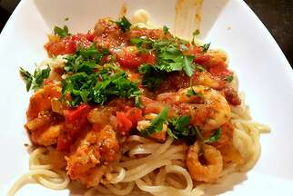

Shrimp Spaghetti with Tomato Sauce recipe

A delicious spagetti dish with large shrimps in a tomato sauce
A single meal to give your body all the goodnes it requires.
Ingredients
- 20 large shrimp, deveined with shell and head left on
- 4 tomatoes, or more to taste
- 1 bunch flat-leaf parsley, divided
- 1/4 cup extra-virgin olive oil
- 1 large onino, chopped
- 1 red bell pepper, chopped
- 1 fresh red chile pepper, finely chopped
- 4 large cloves garlic, sliced, or more to taste
- 1/2 cup water
- 2 tablespoons tomato paste
- 1 tablespoon dried oregano
- salt and ground black pepper to taste
- 1 teaspoon paprika
- spaghetti
Instructions (from allrecipes.com)
-
Peel shrimp and place skin, heads, and tails into a large saucepan. Fill
pan with water and bring to a boil. Reduce heat to low and let simmer,
about 45 minutes.
-
Combine tomatoes and 1/2 the parsley in a blender; puree until smooth.
-
Heat olive oil in a separate pan over medium heat. Add onion, bell
pepper, and chile pepper; cook and stir until softened, about 5 minutes.
Add garlic; cook until fragrant but not browned, 1 to 2 minutes.
-
Pour pureed tomato mixture into the pan with the peppers. Add water,
tomato paste, oregano, salt, and black pepper. Stir well; add paprika.
Let sauce simmer on low to medium heat until juices have reduced.
-
Strain shrimp shells from the water. Bring water back to a boil and add
spaghetti. Cook spaghetti, stirring occasionally, until tender yet firm
to the bite, about 12 minutes. Reserve 1 cup of the cooking water and
drain the rest.
-
In the meantime, add shrimp to the tomato sauce. Add the reserved water,
stir well, and cook until shrimp is pink, about 3 minutes. Plate
spaghetti and spoon the sauce on top; garnish with the remaining
parsley.
Back to main page